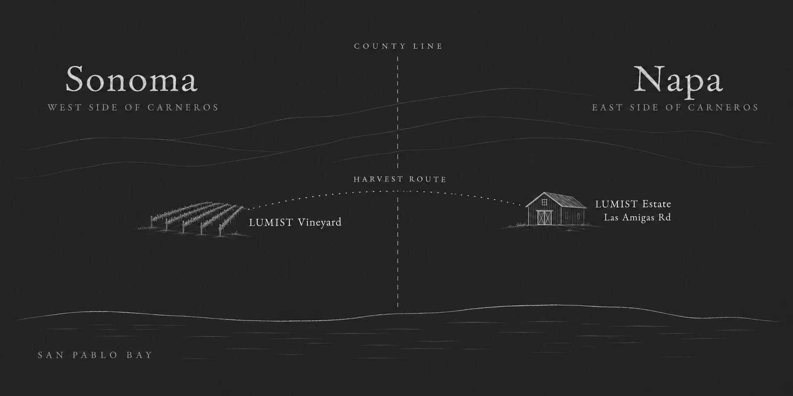
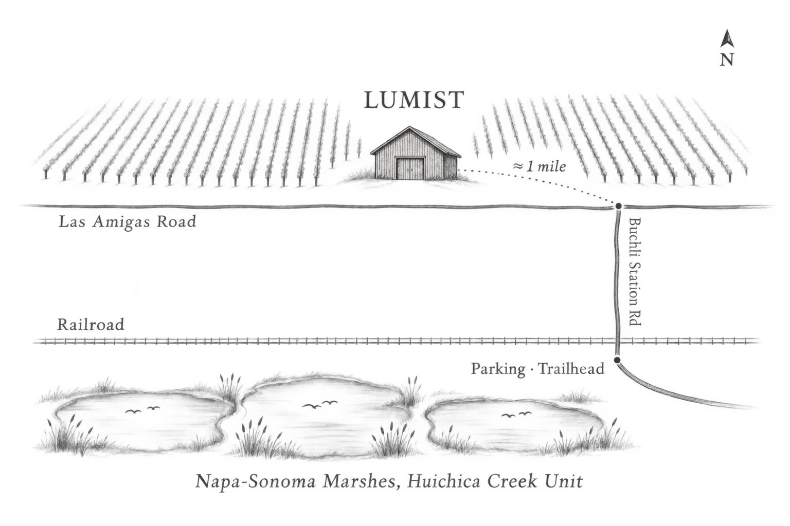
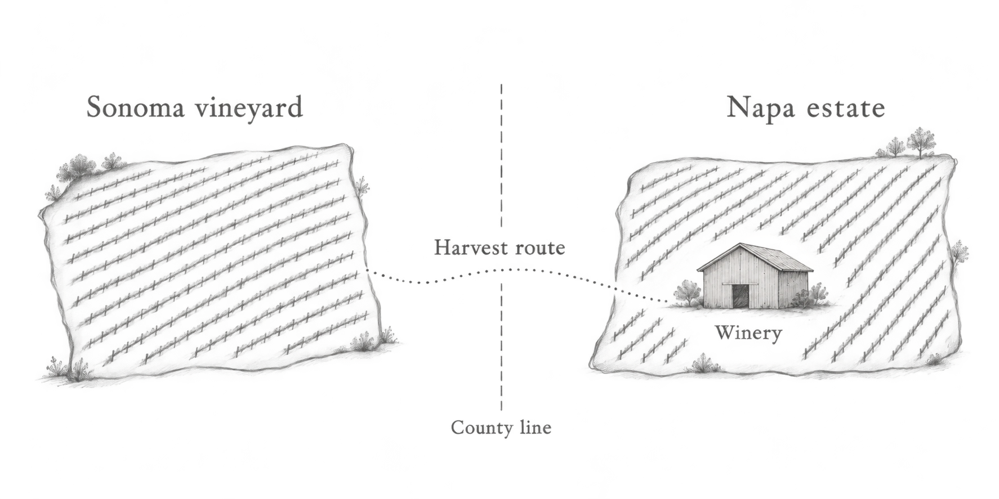
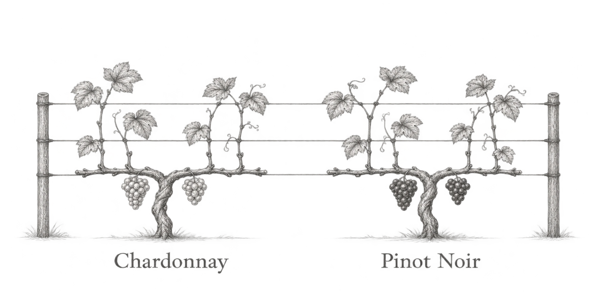

Tundra swan
Large flocks rest on the old salt ponds in the cold months.
Beyond ordinary. Rooted in origin.
LUMIST makes sparkling wine in Carneros, with an estate winery in Napa and a vineyard in Sonoma. Chardonnay, Pinot Noir, and the cool air from San Pablo Bay shape what we call bubble wine for introverts. No toasts, no ceremony. Just a bottle, opened at your own pace. Start wide, then follow the place from the bay to a single bubble.
North of San Francisco, the bay narrows into San Pablo Bay. On its northern shore, low rolling hills sit between the water and the start of two famous valleys. That strip of land is Los Carneros, the wine appellation spanning southern Napa and Sonoma counties.
Cold water, close by. The Carneros vineyards sit close to San Pablo Bay. Cool air and morning fog roll in off the water most days of the growing season.
A region of its own. Los Carneros became an American Viticultural Area (AVA) in 1983. It is one of the few that crosses a county line.
Built for bubbles. Slow, cool ripening keeps the grapes fresh and lively, which is what bubble wine needs most.
Most Carneros vineyards sit just one to four miles from San Pablo Bay. That short distance sets everything: cool days, windy afternoons, foggy mornings, and summers that rarely get hot.
A summer day on Las Amigas Road
Marine fog rolls in off the bay and sits on the vines.
The fog lifts. The moment our name comes from.
Strong breezes off the bay cool and dry the vineyard.
Ripening slows down and the grapes keep their freshness.
Regional climate figures: Carneros Wine Alliance technical information. Averages describe the appellation, rather than an individual vineyard or vintage.
Carneros is split down the middle. The western half is in Sonoma County, the eastern half in Napa County. Same fog, same bay, same cool afternoons. LUMIST works on both sides of the line.

The western side, closer to where ocean air enters the bay. Our Sonoma vineyard is pure growing ground: no cellar, just vines, wind and fog.
The eastern side, and home. The LUMIST estate is here: the winery where every bottle is made, rested and finished, with vines right outside its doors.
About a mile from the estate, Buchli Station Road leaves Las Amigas Road and runs south to the Napa-Sonoma Marshes Wildlife Area: approximately 15,200 acres of tidal marsh, sloughs and old salt ponds on the edge of San Pablo Bay. For people who like quiet, it is the best neighbour we could ask for.

A big, living wetland. The marsh is home to at least 128 species of birds and 25 species of fish, across tidal marsh, sloughs, seasonal wetlands and uplands.
Healing old land. In the mid-1900s much of this marsh was diked into ponds to make salt. Since the 1970s the state has been buying the land back and restoring it to marsh.
Why it matters. Around 1860 these marshes were among the most productive wetlands on the Pacific Coast. By the mid-1980s the Bay had lost over 90% of its wetlands.
Visiting. From Las Amigas Road, turn south on Buchli Station Road and drive to the end, past the railroad tracks. Check the California Department of Fish and Wildlife’s current access rules and closures before visiting.
Large flocks rest on the old salt ponds in the cold months.
Wading slowly through shallow ponds and sloughs.
"Huichica" is the Wappo name for this owl, once abundant along Huichica Creek.
Hunting over the open uplands between the vines and the water.
Sources and access information: California Department of Fish and Wildlife: Napa-Sonoma Marshes Wildlife Area; local field notes from the Huichica Creek Unit.
Our home is on Las Amigas Road, on the Napa side of Carneros, a mile from the marsh. Two sites, one short drive apart. At harvest, grapes picked on the Sonoma side travel across the county line to the winery in Napa, where they meet the fruit from the estate's own vines.

Open, wind-swept ground on the western half of Carneros. At harvest its grapes make the short trip east to the winery.
Home of the winery since 1979, first as Acacia, now as LUMIST. Every bottle is made, rested and finished here, surrounded by the estate's own vines.
LUMIST is not the first wine made at 2750 Las Amigas Road. We are the latest in a line of people who saw something in this cold, windy corner beside the marsh. We go beyond what was done here, and we respect where it came from.
For much of the 20th century, the land beside the marsh was dairy farms and pasture. Families like the Duhigs farmed here; the road to the marsh office still carries their name. Vineyards slowly replaced the cows.
Michael Richmond and Jerry Goldstein found Acacia Winery here, with Larry Brooks as founding winemaker, before Carneros was even an official wine region. It focuses on Pinot Noir and Chardonnay.
Los Carneros becomes the first California appellation drawn by climate rather than county lines. Acacia is one of the wineries that helped put it on the map.
The Chalone group buys Acacia for $8 million. Over the following years the winery also makes some bubble wine alongside its Chardonnay.
Fruit had come from local Carneros growers. In the mid-1990s Acacia begins buying the properties around the winery, building up its own vineyards.
The winery teams up with the state's Department of Fish and Game, giving part of the proceeds of a "Marsh" Chardonnay to wetland restoration next door.
Chalone, and Acacia with it, is bought by Diageo.
The Acacia brand moves to Treasury Wine Estates. The winery and vineyards are bought by the Peju family and reopen that autumn as Calmére Estate.
Calmére stops production and closes its doors. The property is later sold to new owners.
The same fog, the same wind, the same road. A new kind of bubble wine, made for quiet people, from a place with more than forty years of Carneros wine behind it.
The Acacia name belongs to its current owner. LUMIST is an independent label and is not affiliated with Acacia, Treasury Wine Estates or earlier owners of the property.
Down at the level of a single vine, the place becomes two grapes. Chardonnay brings brightness and length. Pinot Noir brings red fruit and body. Every LUMIST wine is one, the other, or both.

Chardonnay. Bright, citrus-edged and long. In the cool Carneros air it keeps a firm, fresh line, the backbone of three LUMIST wines.
Pinot Noir. Red fruit, texture and a little weight. On its own it gives our summer wine its pale pink colour; with Chardonnay it rounds out our spring wine.
Freshness first. For bubble wine, bright acidity matters more than full ripeness, so the cool, slow Carneros season suits both grapes.
The bay, the fog, two counties, two grapes. All of it ends here, in one bubble rising inside the bottle, waiting for a quiet room and your own pace.
Bubble wine, on your own terms.